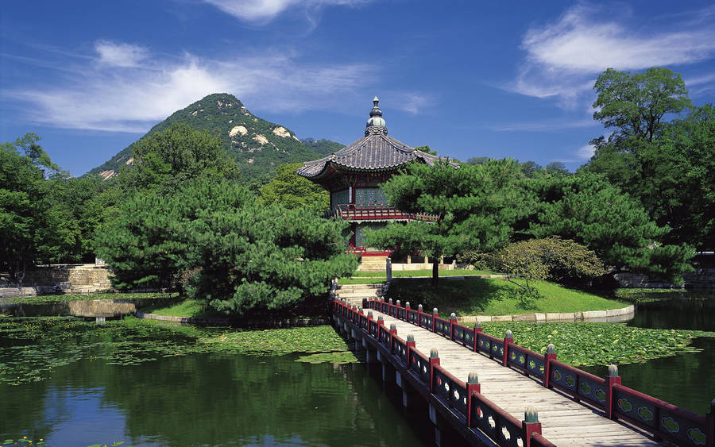

Image 1

Image 2

Image 3
Hyangwonjeong Pavilion
This place is special to me since this place will somewhat make you feel that you're in a different era. The feeling is different, the scenary is good that makes me calm. I'm a nature person so I appreciate this kind of place. And just by looking at it, you can guarantee that the air is fresh.
By Subway:
By Taxi or Walking: